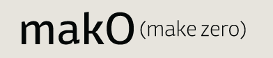

Vernon Adams (UK) email
web
Mako specimen
Jenni Ahonen (Finland) email
Ilona specimen
RoP
Tim Ahrens (Germany/UK) email
web
Herb web specimen
RoP
David Březina (Czechia) email
web
Skolar & Surat specimen
RoP
published by TypeTogether
Valentin Brustaux (Switzerland) email
web
Tiina web specimen
Christina Economidou (Cyprus/UK) email
Phoebe specimen
RoP
Rob Keller (USA) email
web
Vesper published by Mota Italic
Nicolien van der Keur (Netherlands) email
web
Sirba specimen
RoP
Ian Moore (UK) email
web
Broomfield web specimen
RoP
Daniel Rhatigan (USA) email
web
Gina specimen
RoP
Alice Savoie (France) email
web
Capucine specimen
RoP
Fernando de Mello Vargas (Brazil) email
web
Frida specimen
RoP
Thanks!
We’re grateful to a lot of people for helping us all have an extraordinary year.
Martin Andrews, Jo de Baerdemaeker, Rob Banham, Peter Biľak, David Bolton, Ron Carpenter, Carolyn Davidson, Bram de Does, Mary Dyson, Phil Garnham, Victor Gaultney, Nadja Guggi, Eric Kindel, Gerry Leonidas, Paul Luna, Charlene McGroarty, Hadj Messelles, Mitja Miklavčič, Vera Miles, James Mosley, Eric Olson, Thomas Phinney, Ann Pillar, Linda Reynolds, Rich Roat, Nigel Roche, Fiona Ross, Rosemary Sassoon, Fred Smeijers, Jason Smith, Richard Southall, Paul Stiff, František Štorm, Adam Twardoch, Michael Twyman, Gerard Unger, Marjan Unger, Sue Walker, and Mick Stocks and the entire crew of the Design and Print Unit.
Our benefactors: The Arts and Humanities Research Council, Fondation Ernest Boninchi, IKEA Stiftung, The Edward Johnston Foundation, The Monotype Foundation, Het Vreedefonds, and VSBfonds Beurs.
We couldn’t have done it without all our families and friends, either!
Typeface designs © the respective authors, 2000–2009.
Website design and production © David Březina, 2007–2009.
The typeface used in the headline is Ronnia by TypeTogether.
Last update: 6 August 2009 — RSS feed